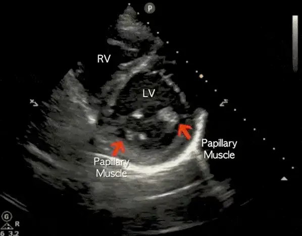

POCUS Tips › Cardiac
Parasternal Short AxisPSAX
Regional wall motion and the right heart’s pressure story — this is where a flattened septum gives away RV overload.
Open the interactive view with the loop and quiz →
Where to put the probe
- Window
- Same window as PLAX — left parasternal, 3rd–4th interspace
- Marker
- Patient’s LEFT shoulder (~2 o’clock)
- probe
- phased array
- preset
- cardiac
- depth
- 14 cm
Get the view
- Start from a good PLAX, then rotate 90° clockwise — marker travels from the right shoulder to the left.
- Fan through the levels: aortic valve (the Mercedes), mitral valve (fish mouth), papillary muscles, apex.
- Park at the papillary-muscle level for function — both papillary muscles in view, LV a round doughnut.
- If the doughnut is an egg, you are cutting obliquely. Rock until the walls sit equidistant from the center.
What you are looking at
- Left ventricle
- Circular in diastole. All segments should thicken and move inward together.
- Right ventricle
- A thin crescent draped over the LV. Normally small at this level.
- Papillary muscles
- Your landmark for the standard function level — one anterolateral, one posteromedial.
- Interventricular septum
- Should bow toward the RV. Flattening is the D-sign.
Numbers that matter
| Look for | Normal | Call it abnormal when |
|---|---|---|
| LV shape in diastolepapillary muscle level | circular | septal flattening — the D-sign — from RV pressure or volume overload |
| RV crescentsame level, end-diastole | thin, small | RV wraps the LV or displaces the septum |
| Wall motion by territoryanteroseptal LAD · lateral LCx · inferior RCA | uniform thickening | one territory thins or fails to thicken |
| Fractional shorteningeyeball cavity change base to peak systole | walls visibly converge | cavity barely changes size |
Don’t be fooled — pitfalls
- Off-axis cuts fake wall-motion abnormalitiesAn oblique plane elongates the LV and makes normal segments look hypokinetic. Confirm any regional finding in a second view.
- Scanning at the mitral level and calling it functionThe mitral level runs bigger and hides apical disease. Descend to the papillary muscles before you judge.
- Trabeculation and the moderator band mistaken for thrombusBoth are attached, move with the wall, and are the same echogenicity as myocardium.
- One frame is not RV strainThe D-sign is a diastolic finding. Watch several cycles and correlate with RV size in apical and subcostal views.
Bad image? Fix it
- The doughnut is an ovalYou are rotated or angled. Small rotation adjustments first, then rock the heel of the probe.
- LV floats in the middle of the screenReduce depth so the ventricle fills the sector — you cannot judge subtle wall motion on a tiny image.
- Only the aortic valve level appearsAngle the tail of the probe toward the patient’s head to sweep the beam down toward the apex.
- Everything is bright and washed outTurn gain down; over-gained myocardium hides the endocardial border you are trying to track.
So what — what the finding changes
- D-sign + dilated RV + hypotensionRV failure pathway. Avoid volume loading, look for PE, support the RV rather than chasing pressure with fluids.
- One akinetic territoryTreat as an ACS pattern — ECG, troponin, cardiology, not a POCUS diagnosis on its own.
- Globally poor functionHold fluids, reassess the IVC and lungs before any resuscitation volume.
Educational use only. Not for diagnosis or treatment decisions — confirm findings with formal imaging and your own judgment. By Yonathan Daniel, MD · About · Last reviewed 2026-09-15.